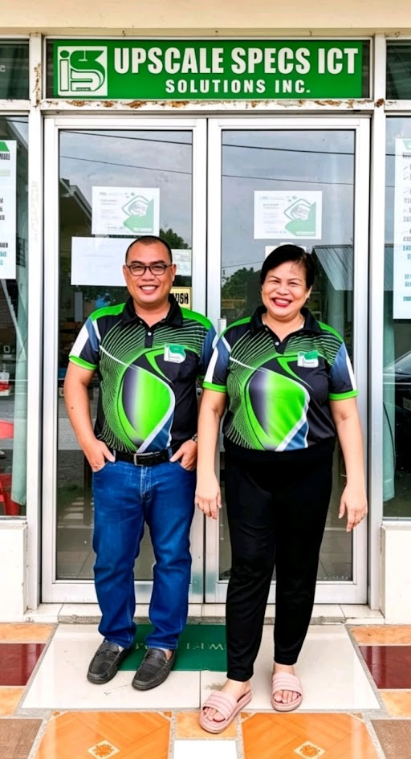

UPSCALE
January 24 — Fiesta sa Sto. Niño
The UPSCALE Founding & Establishment (2022) Founded in 2022, Upscale Specs ICT Solutions Inc. was created to address the growing demand for reliable internet and ICT services in Negros Oriental ,The company was officially registered with the SEC (Registration No. 2022110076676-04), marking its formal entry into the Philippine telecommunications and ICT sector ,Its headquarters was established at Sojor Building, La Demokrasya Street, District 3, Dauin, Negros Oriental..
Early Services & Growth (2022–2023)
- Began offering fiber-optic internet solutions to homes and businesses, positioning itself as a local competitor to larger national providers.
- Expanded into CCTV and security systems, providing integrated safety solutions for enterprises and residential clients.
- In April 2023, the company issued service advisories related to NGCP power interruptions, showing transparency and commitment to customer communication.
- providing integrated safety solutions for enterprises and residential clients.
Summary:
Upscale Specs ICT Solutions Inc. has evolved from a local startup in 2022 into a regional ICT player by 2025, driven by its commitment to connectivity, security, and innovation. Its history reflects a trajectory of steady growth, strategic partnerships, and technological upgrades aimed at empowering communities with modern ICT solutions.